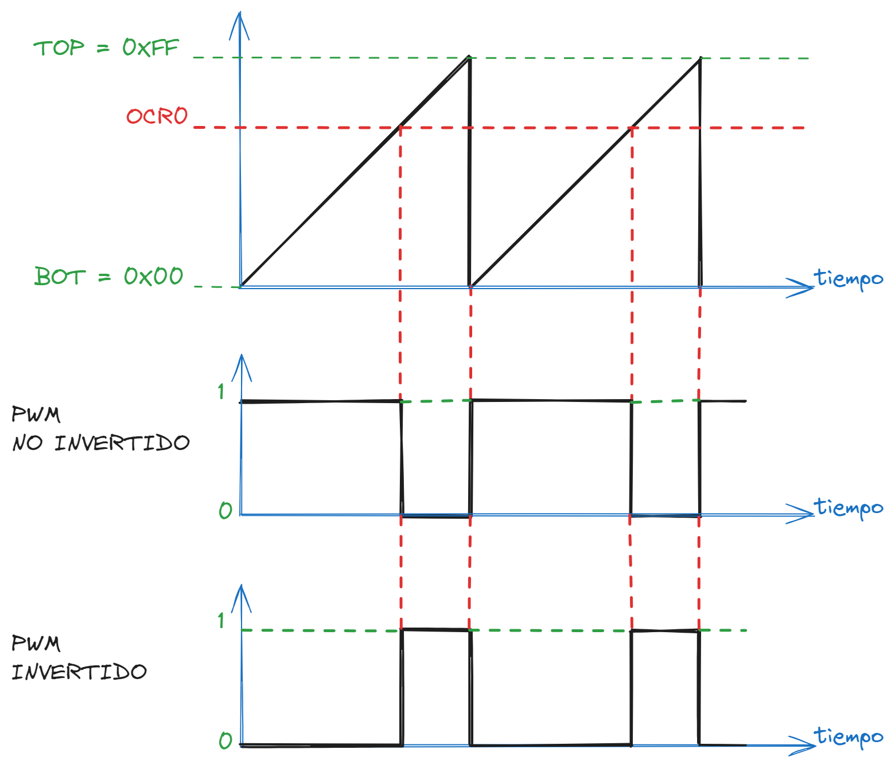

CDyM - TP4
Table of Contents
1. CDyM - TP4
1.1. Ejercicio No 1: TIMERS - Modos PWM
1.1.1. Señal PWM
- Explique que es una señal PWM y muestre como calcular el valor medio de dicha señal.
Pulse Width Modulation (PWM) o en español Modulacion por Ancho de Pulso es una técnica en la que se logra variar el ancho del pulso de una señal y tiene como salida una señal periodica a la que se le modifica el Ciclo de Trabajo.
La técnica de PWM permite obtener una señal analógica a partir de una digital. La señal analógica se obtiene a partir del promedio de la señal digital, y a su vez este promedio cambia con el Ciclo de Trabajo.
Se denomina ciclo de trabajo al porcentaje de tiempo en que la señal esta activa respecto al periodo total.
\[ D = \frac{A}{T} * 100 \]
D : Ciclo de Trabajo
A : Tiempo en el que la función es positiva (Ancho del Pulso)
T : Periodo de la Función

Figure 1: Ciclo de Trabajo
El valor medio de una señal se puede calcular como: \[ V_{medio} = \frac{\text{Area bajo la curva de la señal}}{\text{Periodo Total}} \]
La señal cuadrada tiene entonces dos partes:
Una parte alta de cuyo ancho es \(A\) y tiene un area de \(A * V_{ref}\)
Una parte baja cuyo ancho es \(T-A\) y tiene un area de \(0\)
Si calculamos el Area total bajo la Curva sera entonces: \[ \text{Area} = V_{ref} * A + 0 \]
El valor medio es entonces: \[ V_{medio} = \frac{V_{ref} * A}{T_{total}} \]
Si sacamos como factor comun al Ciclo de Trabajo el valor medio de la señal PWM se define entonces como: \[ V_{medio} = D * V_{ref} \]
1.1.2. Fast PWM
- Explique el funcionamiento del modo “Fast PWM”. Haga un diagrama temporal. Muestre cómo generar dos señales PWM de polaridades opuestas utilizando los generadores A y B.
El modo "Fast PWM" es una forma de operación para generar señales PWM de alta frecuencia. Es denominado rapido porque permite actualizar el valor del comparador y del ciclo de trabajo en cada ciclo del reloj.

Figure 2: Ciclo de Trabajo
1.1.3. Frecuencia, Ciclo de Trabajo y Resolucion
- Encuentre las ecuaciones de frecuencia y ciclo de trabajo del PWM generado con el modo anterior ¿de qué dependen? Calcule la resolución relativa, en bits y en %, con la que se puede variar el ciclo de trabajo para una configuración genérica de los registros.
La frecuencia para el modo Fast PWM es: \[ F_{PWM} = \frac{F_{oscilador}}{(TOP+1)*N} \] Donde \(F_{oscilador}\) es 16MHz y para Timer0 : TOP = 0xFF (256)
El Ciclo de Trabajo es para Fast PWM es:
Para el Modo No Invertido \[ \text{Ciclo de Trabajo} = \frac{OCR0 + 1}{TOP} * 100 \]
Para el modo Invertido: \[ \text{Ciclo de Trabajo} = \frac{TOP - OCR0}{TOP} * 100 \]
La resolución viene determinada por la longitud de la palabra digital (número de bits). La codificación más simple utilizaría una resolución de 1 bit. Con un bit (dado que se usa el sistema binario que son potencias de dos: \(2^n\)) solo se permite seleccionar entre dos valores (\(2^1\)): o cero o uno.
El numero total de valores niveles posibles para el contador es TOP + 1. En un temporizador de 8 bits sabemos que TOP = 255.
\[ \text{Resolución en bits} = 2^n = TOP + 1 = 256 \] \[ \text{Resolución en bits} = \log_2{(TOP+1)} = \log_2{256} = 8bits \]
La resolución en porcentaje se refiere al cambio minimo en el ciclo de trabajo que puede lograrse.
\[ \text{Resolución en bits(%)} = \frac{1}{TOP + 1} * 100\% = \frac{1}{256} * 100\% \approx 0.39\% \]
1.1.4. Resolucion en mV
- Calcule la resolución (en mV) del valor medio de la señal PWM filtrada.
\[ \text{Resolución(mV)} = \frac{V_{ref}}{TOP + 1} \]
1.1.5. PWM Phase Correct
- Explique el funcionamiento del modo “PWM Phase Correct”. Muestre cómo lo utilizaría para generar dos señales de la misma frecuencia PWM pero con el ciclo de trabajo de una de ellas 1/3 del ciclo de trabajo de la otra.
1.2. Ejercicio No 2: Conversor Analógico – Digital (ADC)
- Haga un diagrama en bloques explicando las distintas partes del módulo ADC integrado en el microcontrolador y enumere las características principales del mismo.
- Explique en qué consiste el algoritmo de aproximaciones sucesivas que utiliza el ADC.
- Grafique la transferencia entrada-salida de un ADC ideal de 3bits y grafique el error de cuantización. Justifique.
- Se desea medir una tensión analógica con el ADC de 10bits, sabiendo que AREF=5V. Muestre como calcular el valor de tensión medido en [mV] a partir de la muestra digital obtenida. Calcule el LSB en mV y en %.
- ¿Cuál es el rango de la tensión analógica de entrada? ¿Cuál es la máxima frecuencia de reloj del conversor? ¿Cuál es la máxima frecuencia de muestreo para un solo canal?
- Explique cómo realizar el muestreo de los 8 canales (ADC0 a 7) realizando la conversión en 10 bits. ¿Cuál sería la máxima frecuencia de muestreo que puede obtenerse para cada canal en este caso?
- Muestre cómo se configura y como se utiliza el ADC en modo 8 bits.
1.3. EJERCICIOS PARA SIMULAR
1.3.1. Ejercicio No 1: PMW
- Realice un programa que permita generar una señal PWM con el TIMER 0 del MCU. El valor del ciclo de trabajo (entre 0 y 99%) deberá enviarse al MCU desde la terminal serie. Utilice el modo 7 fast PWM para generar los 100 ciclos de trabajo. Muestre cuales son las posibles frecuencias de PWM en base a la configuración del prescalador, elija uno para su implementación. Simule en Proteus y verifique la señal mediante el osciloscopio.
- Utilizando el modelo de Proteus MOTOR-PWMSERVO, realizar un programa que permita controlar por medio de la técnica PWM el ángulo de giro de un eje entre +90° y -90°. Analizar las propiedades del modelo estándar y determinar la resolución en el control del ángulo que se puede obtener utilizando fast PWM de 16 bits.
1.3.2. Ejercicio No 2: ADC
- Realice un programa para tomar muestras del canal ADC3 (PC3) de manera periódica cada 100ms. Para esto deberá configurar adecuadamente el periférico y un temporizador para controlar el periodo de muestreo. El valor medido deberá mostrarse en unidades de mV en un LCD. Para comprobar o simular este comportamiento, utilice una resistencia variable (POT) conectada al terminal ADC3.
- Modificar el programa anterior reemplazando la resistencia variable por un sensor de temperatura LM35. Mostrar la temperatura en grados en el LCD cada 1 segundo. Calcular el rango y la resolución de la temperatura a medir con su implementación. Simular en Proteus.